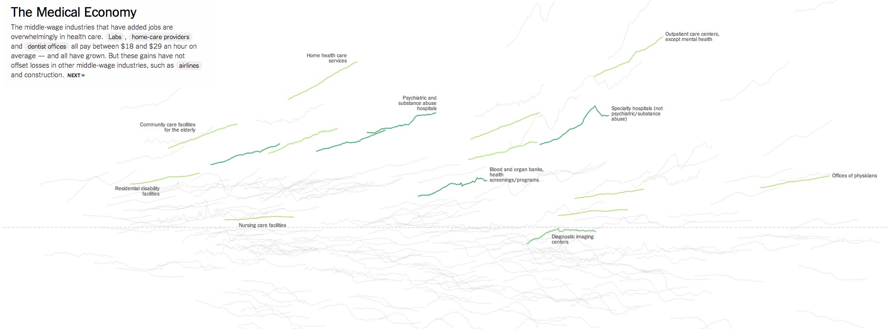
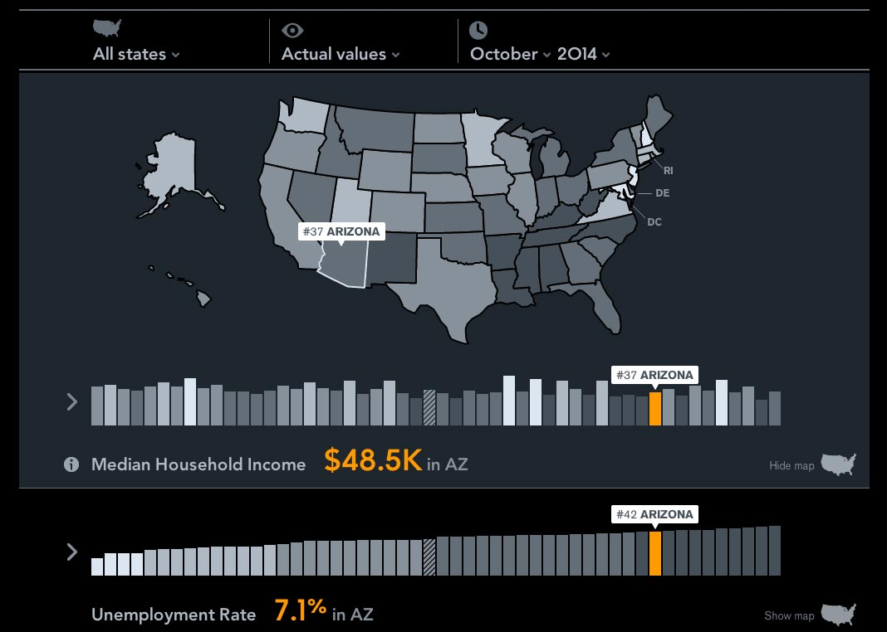

Workshop
Designing Interactive Data Visualization
Slides: acadia.riot.industries/
Github Repo: github.com/philrenaud/datavis-workshop
1. Why do we care about data visualization?
We're pretty good at recording data.
Too good, probably.
- On an average day, Twitter generates about 500 million tweets. That's about 15 times the number of books in the Library of Congress
- In August 2010, Eric Schmidt, former CEO of Google, said that between the beginning of time and 2003, humanity generated about 5 exabytes (5 x 1018 bytes) of data.
- Now, we generate that much data roughly every 2 days.
These mountains of data add up. We record much more data than we can possibly analyze 1:1 in a lifetime.
Even when we aggregate data, it's not always clear what's going on.
And this is sort of a bummer, because
Data is only valuable when it's understood.
Anscombe's Quartet

Anscombe's Quartet
Statistical Detection of ... ?

Statistical Detection of Election Fraud

Visualization lends meaning to raw data.
2. Data Journalism
- In addition to recording data at an unprecedented rate, we've become very good at exposing it as well.
- City open-data policies, like Halifax Open Data
- Scientific data, like The 1000 Genomes project
- APIs as interfaces to otherwise obfuscated data, like Census Reporter
- Github repositories of data behind investigative news, like FiveThirtyEight's Data
- This access provides us with the means to think critically about the world around us.
- If you know even basic spreadsheet use, you can start using the aforementioned data to research the subject of your choice.
- Journalists have taken this to its logical next-step: Data-Driven investigative journalism.
- Sites like FiveThirtyEight and NYTimes' The Upshot give us ways to think about their data.

- In the absence of the ability to code and analyze the information ourselves, Data-Driven Journalism sites do us a great service when they provide methods for us to interact with their data.
- A mainstay of Data Journalism is the pairing of a story with the understanding that a reader's interpretation of it may differ.
- In practical terms, this means that the best data journalism allows the reader to sort, filter, combine and rearrange data through a visual interface.
3. Data as a means of Critical Thinking
Some people mislead in order to persuade.

But they're jerks. Don't be a jerk.
Persuade the right way: back your narrative up with data.
Telling Data Stories is more about being able to answer questions than about telling a single narrative.
(Data Science is not an Op-Ed piece)
There are some very good reasons to use data / data visualization as an aid to critical thinking:
1. Some of our questions have conflicting answers.
- It is a foregone conclusion that someone selling you something has an unobjective bias toward their product.
-
In the name of persuasion, some sources are simply unreliable. Sometimes they look like the wrinkle ad from before. Other times they require analysis.
- Data lets us explore, lets us fact-check.
Data makes critical thinkers of us.
2. Sometimes we ask the wrong questions.
- We might ask "How many customers did you have in October?"
- We probably means "How many customers did you have in October, relative to September" or "relative to last October"
Data answers the questions we didn't know we had.
3. Sometimes the answer to a simple question is unsatisfying.
- Q: How many Californians relocated from outside the USA?
- A: About 28%
- Okay but...
- Q: Where do the other 78% come from?
- Q: What about Californians who leave? Where do they go?
- Q: How does this compare to last year? to 100 years ago?
- Q: How does this compare to the US as a whole? To any given state?
- nytimes.com/interactive/2014/08/13/upshot/where-people-in-each-state-were-born.html
4. Sometimes there are many distinct narratives to explore.
Data makes critical thinkers of us all
4. Static Data Visualization:
Best Practices


- Certain types of visualizations are well-suited to particular data types:
- Bar charts are boring, but well-suited to allow us to quickly determine differences in quantity:
- Sometimes pie graphs are okay for this too, but be warned: at a glance, people don't see area, they see height.

- Treemaps show quantity, plus a sense of hierarchy

- Maps provide several ways to show physical location.

- Maps are particularly versatile because of our common understanding of their expected shape; differences from our expectations let us see a different kind of story:
- This cartogram shows expected popularion by 2300. It is only by changing our previous knowledge of the shape of the world that this has any effect.
- Time-Series charts show how quantitative values change over time:

- Scatter plots show us the differences between things in two dimensions

- Network graphs show us the relationships between things - for example, this map of all of the followers of @CollideHalifax
5. The Qualities of Highly Successful Interactive Data Visulizations
The State of the Union in Context

source
source2
Bar Charts, Interactive
The Guardian - The state of our union is ... dumber
source
Scatter plot/ Time series, Small multiples. Allows user to parse and reveal.
BBC: Scotland Decides

source
Normalized bar chart, Map. Allows user to sort data.
The Guardian - Violence and guns in best-selling video games
source
Radial Bar Graph with edge-bundling. Allows user to filter.
Quick aside: be considerate about how you categorize.
NPR - When are people working?

source
Area Graph. Allows user to visually compare.
Musicians' Deaths by Age
source
Time Series. Allows user to filter based on category.
Bachelors Degrees by Demographics
source
Visualizing MBTA Data

source
Parallel Coordinates, Maps, Bar and Area. Allows user to explore relative and absolute time, and compare stations/trains.
NY Times: How the Recession Reshaped the Economy, in 255 Charts
source
Loose interaction; the act of scrolling shows comparisons between industries. Sparklines. At the bottom, Small Multiples show the fuller picture.
Bloomberg Visual Data: State-by-State
source
Map, Vertical Bar Chart, Time-Series. Allows user to dig deeper and cross-compare state data.
- The primary theme among the interactions presented here is that they allow users to complete a few common, basic actions:
- Sort: Representing the data in different orders can reveal trends otherwise unseen
- Filter: Only show the data that meets certain user-defined criteria
- Compare: Allow the user to take pieces of the whole and see how they relate.
- Why do these visuals feel so compelling, compared to traditional static media, or data in chart format?
- The general pathway to understanding:
- Unstructured Information
- Data
- Structured Information
- Knowledge
- Wisdom
- Visualization helps bridge the gap between Knowledge and Wisdom. Interactivity prompts exploration, and exploration leads to understanding.
- And smarter users = good for everyone.
6. Some common pratfalls of Data Visualization
So, when I see a Visualization, can I be sure that the Data Story I'm being told is correct?
- Not always! Be critical.
- Mark Twain's 3 kinds of lies:
"Lies, Damned Lies, and Statistics".


Avoid these common deceptions when designing data stories:
1. Maps as population indicators
NYC has ~ the same population as the shaded area
2. Cumulative Time-Series Charts


3. Circles in general.
We're meant to see area; we commonly just see height.
4. Pie charts when dealing with close values
(Bar charts are boring but we're really really good at reading them)

5. Bar charts with arbitrary axis points

4. Seeing correlations when they're coincidental

7. In which we build something.
Bar Charts, particularly ones with multivariate data, often a lot to be desired when they're static.
- Example: Monthly Expenses by % of Income
- Example: Off-Season Twitter Usage Among MLB Teams
- Example: Police Force Diversity
- Head over to
tinyurl.com/acadia-census
- In Chrome, open up your console - CMD + ALT + i
- (or right-click and select "Inspect Element", then hit ESC)
- In your text editor of choice, open up the project you downloaded from Github, then head to
/js/acquiring_data.js
<Code Interlude>
Open up:
- In Chrome: /multivariate_data.html
- In your text editor: /multivariate_data.html
- In your text editor: /js/multivariate.js
<Intermission>
</Intermission>
Open up:
- In Chrome: tinyurl.com/nba-win-chance
- In Chrome: /series.html
- In your text editor: /series.html
- In your text editor: /js/lines.js
<Code Interlude>
Bonus Round!
- In Chrome: /network.html
- In your text editor: /network.html
- In your text editor: /js/network.js
Thanks!
Slides: acadia.riot.industries
Github Repo: github.com/philrenaud/datavis-workshop
Bonus links:
Functional Programming should be your #1 priority for 2015
Quick Guide to Making an Interactive D3 map